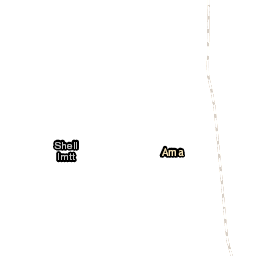
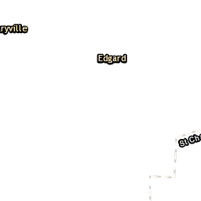
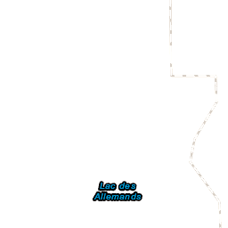
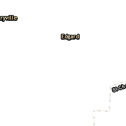
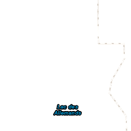
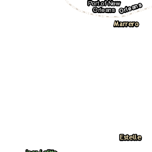
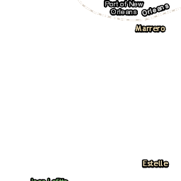

)
) 
)
)
) 


As petroleum companies moved into Louisiana, they sought land that was plentiful and cheap in order to construct refineries. The "River Parishes" between Baton Rouge and New Orleans along the Mississippi River were an ideal location. They hosted vast acres of idle land, a legacy of Louisiana's once-robust plantation economy. The river itself provided access to Gulf oil fields, and could serve as a coolant for machinery as well as a toxic waste sink. The land nearest the river was also the most elevated and least flood-prone in the region due to many hundreds of years of sediment deposition by the Mississppi River, which built up natural levees along its banks.
Due to these siting benefits, industrial facilities spread rapidly across the German Coast's riverfront throughout the 20th century. The Mexican Petroleum Company initiated this trend in 1913 after purchasing the Destrehan Plantation. Royal Dutch Shell moved into the parish shortly after when it purchased the 366 acre Good Hope plantation tract. Over time the tract grew into a massive oil refinery that bought out and ultimately devoured what was once the small port town of Good Hope.
Many former slaves settled the plantation land upon which they once labored following the Civil War, often occupying towns and villages directly along the riverfront. When the lower Mississippi became a site of rapid petro-industrial development, these freed slave communities became the unwitting neighbors of heavy industry. Such was the case for the village of Sellers, in the town now called Norco, an acronym for 'New Orleans Refining Company'. After purchasing the site of the former Trepagnier plantation, Shell relocated Sellers residents to an area slightly downriver from their original settlement. This community became known as Diamond.
Shell did not begin the development of their chemical facility on the Trepagnier site until the early 1950s, and soon following its construction, industrial disamenities began to burden the Diamond community. Shortly after the facility's construction, many residents sold their properties to Shell at an extremely low price in order to escape health and environmental threats. Begining in the late 1990s and continuing into the early 2000s, after much pressure by Diamond residents and their allies, Shell entered into a negotiated buyout with the remaining residents and purchased many residential lots along the industrial fenceline.
Diamond is now what some scholars refer to as an 'ex-town', a geographic phenomenon along the lower Mississippi River characterized only by the things that have disappeared. The homes in Diamond have been moved or destroyed; the church has shut its doors; and the people have gone away. All that remain is a vacant buffer of land that skirts the refinery. Rigamer (1977) succinctly summarizes the totality of the fence line experience for these former communities:
“As industrial operations expand, they become more obtrusive and force residents to leave the community. As they do, the industry buys the property, and it remains vacant. The vacant homes add to the deterioration of the area and accelerate the exodus of the remaining residents. As they leave, the cycle is repeated. The industrial concern quickly gains control of the area, and the community is displaced.”
The Diamond buyout has increased Shell's hold on the area's "500 year floodplain", a technical term used by the Army Corps of Engineers to refer to an area of land that has a 1% chance of flooding in any 500 year period. This land is the most environmentally secure in the region. In total, industrial land uses in Norco account for approximately 51% of the total land base; while industrial land uses within the 500 year flood plain account for 73% of the land base. Overlaying the buyout properties, it is evident that a vast majority of these purchases fall within the 500 year flood plain.
Thus, the expansion of industry has not only displaced residents from the community, but has increased the net vulnerability of residential areas to flooding.
{kind=link}